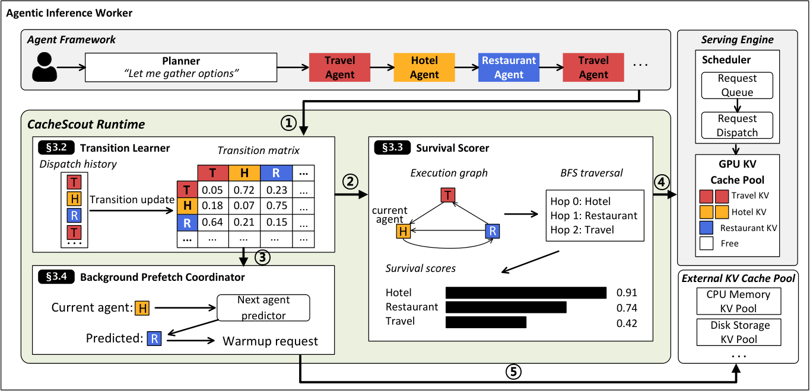
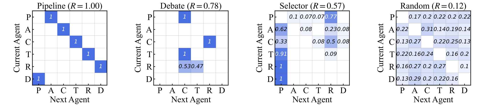

Why it matters왜 중요한가
Every KV-cache paper in this archive for the past month has asked how to make the cache smaller. This one asks a question that comes logically first: given the cache you already have, are you even keeping the right bytes?
지난 한 달 동안 이 아카이브의 모든 KV 캐시 논문은 캐시를 어떻게 더 작게 만들 것인가를 물었다. 이 논문은 논리적으로 그보다 앞서는 질문을 던진다. 이미 가진 캐시에서, 당신은 과연 맞는 바이트를 남기고 있는가?
Production LLM serving is converging on multi-agent workflows — a planner dispatches to a Travel Agent, a Hotel Agent, a Coder, a Reviewer — and every one of those agents reopens with a prompt prefix that never changes across invocations or even across users. The authors call it the agent anchor, and they measure it: anchor blocks are reused 49–173 times on average versus 12–15 for session history, a 4–13× gap. Yet vLLM, SGLang and TensorRT-LLM all manage KV blocks as anonymous content hashes ranked by recency. The engine knows a block was touched; it does not know who touched it. So while the Hotel Agent and Restaurant Agent run, the Travel Agent's anchor ages out — and it is evicted at the exact moment it is most certain to be needed again.
프로덕션 LLM 서빙은 멀티에이전트 워크플로로 수렴하고 있다. 플래너가 Travel Agent, Hotel Agent, Coder, Reviewer로 작업을 분배하고, 이 에이전트들은 매번 호출·심지어 사용자가 바뀌어도 절대 변하지 않는 프롬프트 프리픽스로 시작한다. 저자들은 이를 에이전트 앵커라 부르고 직접 측정한다. 앵커 블록은 평균 49~173회 재사용되는 반면 세션 히스토리는 12~15회로, 4~13배 차이가 난다. 그럼에도 vLLM, SGLang, TensorRT-LLM은 KV 블록을 최근성으로 정렬된 익명 콘텐츠 해시로 관리한다. 엔진은 블록이 접근됐다는 사실은 알지만 누가 접근했는지는 모른다. 그래서 Hotel Agent와 Restaurant Agent가 도는 동안 Travel Agent의 앵커는 나이를 먹고, 다시 필요해질 것이 가장 확실한 바로 그 순간에 축출된다.

By the numbers핵심 숫자
Per-workload results워크로드별 결과
| Workload | Fixed-context share | Anchor reuse vs history | KV hit rate vs vLLM | Mean TTFT |
|---|---|---|---|---|
| GSM8K | 54% | 4× | +18pp | −26% |
| MT-Bench | 53% | 4× | +18pp | −18% |
| GAIA | 53% | 5× | +18pp | −27% |
| SWE-bench | 62% | 13× | +10pp | −45% |
The measurement that forces the design설계를 강제한 측정
The obvious objection to a learned transition model is: why learn it at runtime when frameworks like AutoGen and LangGraph already know the workflow? Figure 5 is the answer, and it is the most persuasive page of the paper. The same six agents were run under four coordination topologies, and the resulting transition matrices have nothing in common. Pipeline is a deterministic chain (R = 1.00). Debate collapses onto a Coder↔Reviewer exchange periodically adjudicated by a judge (R = 0.78). SelectorGroupChat — the production case, where an LLM picks the next agent at runtime — is still concentrated on a handful of high-probability edges (R = 0.57), and a plain online counter hits 76–86% top-1 accuracy within 50 dispatches. Only Random is structureless (R = 0.12). So execution structure is not a property of the agent set that could be declared ahead of time; it is a property of the coordination behaviour, and it only exists at runtime.
학습된 전이 모델에 대한 뻔한 반론은 이것이다. AutoGen이나 LangGraph 같은 프레임워크가 이미 워크플로를 아는데 왜 런타임에 학습하는가? Figure 5가 그 답이며, 논문에서 가장 설득력 있는 한 페이지다. 동일한 6개 에이전트를 네 가지 조율 토폴로지로 돌렸더니 전이 행렬들은 서로 아무 공통점이 없었다. Pipeline은 결정론적 체인(R = 1.00)이다. Debate는 심판이 주기적으로 개입하는 Coder↔Reviewer 교환으로 수렴한다(R = 0.78). SelectorGroupChat — LLM이 런타임에 다음 에이전트를 고르는 프로덕션 사례 — 도 여전히 소수의 고확률 엣지에 집중되어 있고(R = 0.57), 단순한 온라인 카운터가 50번의 디스패치 안에 top-1 정확도 76~86%에 도달한다. 구조가 없는 것은 Random뿐이다(R = 0.12). 즉 실행 구조는 미리 선언할 수 있는 에이전트 집합의 속성이 아니라 조율 행동의 속성이며, 오직 런타임에만 존재한다.

The three moving parts움직이는 세 부품
Transition Learner
A first-order Markov chain over agents, maintained as a raw count matrix Cij with Laplace-style smoothing. The clever part is identification without cooperation: the agent is recovered by fingerprinting the request's own prefix block hashes at prefix-match time, so a fingerprint change is the dispatch signal. The framework is never asked, never modified, never even aware.
에이전트 위의 1차 마르코프 체인으로, 라플라스 방식 스무딩을 적용한 원시 카운트 행렬 Cij로 유지된다. 영리한 부분은 협조 없이 식별한다는 점이다. 프리픽스 매칭 시점에 요청 자신의 프리픽스 블록 해시를 지문화해 에이전트를 복원하므로, 지문이 바뀌는 것 자체가 디스패치 신호다. 프레임워크에 묻지도, 프레임워크를 수정하지도, 심지어 프레임워크가 알지도 못한다.
Survival Scorer
True survival probability — will anchor a reappear within K steps — requires summing over all paths, so it is approximated: threshold the matrix at τ into a sparse graph, one BFS from the current agent, survival = 1 − min(hops, Emax)/Emax. Then the eviction score is (survival + δ) · (e−λ·age + δ) · |b|, readable as the expected prefill work destroyed by evicting this block. The product is what makes it safe: flatten the survival term and it degrades into LRU on its own.
진짜 생존 확률 — 앵커 a가 K 스텝 안에 다시 나타날 확률 — 은 모든 경로를 합산해야 하므로 근사한다. 행렬을 τ로 잘라 희소 그래프를 만들고, 현재 에이전트에서 BFS를 한 번 돌린 뒤 생존도 = 1 − min(홉, Emax)/Emax로 둔다. 축출 점수는 (생존도 + δ) · (e−λ·age + δ) · |b|이며, 이 블록을 버릴 때 파괴되는 prefill 작업량의 기댓값으로 읽힌다. 곱 형태가 안전장치다. 생존도 항이 평평해지면 정책은 스스로 LRU로 되돌아간다.
Background Prefetch + gate
Instead of writing KV blocks into the engine — which would mean patching the memory allocator and losing portability — the coordinator simply issues a normal inference request containing only the predicted anchor, with max_tokens=1, and lets the engine's own prefill pipeline build the blocks. Warmups are excluded from transition learning, rate-limited, and gated on R ≥ Rmin so an unpredictable workload never burns GPU on speculation.
KV 블록을 엔진에 직접 써넣는 대신 — 그러려면 메모리 할당자를 패치해야 하고 이식성을 잃는다 — 코디네이터는 그저 예측된 앵커만 담은 평범한 추론 요청을 max_tokens=1로 발행하고, 엔진 자신의 prefill 파이프라인이 블록을 만들게 둔다. 워밍업 요청은 전이 학습에서 제외되고, 속도 제한이 걸리며, R ≥ Rmin 게이트를 통과해야 하므로 예측 불가능한 워크로드에서 GPU를 추측에 낭비하지 않는다.
How it works어떻게 작동하나
- Hook three points, touch nothing else. 세 지점만 후킹하고 나머지는 건드리지 않는다. An 800-line patch to five vLLM files adds ObserveTouch() at prefix-match time, ScoreBlock() on the eviction path, and Warmup() between turns. The scheduler, attention kernels and allocator are untouched.vLLM 파일 5개에 대한 800줄 패치가 프리픽스 매칭 시점의 ObserveTouch(), 축출 경로의 ScoreBlock(), 턴 사이의 Warmup()을 추가한다. 스케줄러·어텐션 커널·할당자는 그대로다.
- Learn on every touch, in O(1). 모든 접근마다 O(1)로 학습. Fingerprint the request, map block→agent, and if the agent changed, bump one counter and refresh P̂. Cost: ~1 μs per block touch, and the state is bounded because it is a matrix over agents, not over blocks or tokens.요청을 지문화하고 블록→에이전트 매핑을 갱신한 뒤, 에이전트가 바뀌었으면 카운터 하나를 올리고 P̂를 갱신한다. 비용은 블록 접근당 약 1 μs이며, 상태는 블록이나 토큰이 아니라 에이전트에 대한 행렬이므로 크기가 유한하게 묶인다.
- Recompute hop distances once per dispatch, not per eviction. 홉 거리는 축출마다가 아니라 디스패치마다 한 번만 재계산. When the current agent changes, rebuild the sparse graph and run one BFS; the resulting hop table is cached for the whole scheduler step. That is why eviction stays under 6 μs at P99 even with 24 agents — the graph work amortises away from the hot path.현재 에이전트가 바뀔 때만 희소 그래프를 재구성하고 BFS를 한 번 돌리며, 그 결과 홉 테이블은 해당 스케줄러 스텝 전체에서 재사용된다. 에이전트가 24개여도 P99 축출 지연이 6 μs 아래로 유지되는 이유가 이것이다. 그래프 계산이 핫패스 바깥으로 상각된다.
- Evict by score, warm in the gaps. 점수로 축출하고, 틈에서 데운다. On eviction, return argmin of ScoreBlock over candidates, with a tie-break preferring blocks already resident in the CPU tier. Between turns, if R ≥ Rmin, fire one warmup for argmax P̂(a | at).축출 시에는 후보 중 ScoreBlock의 argmin을 반환하되, 이미 CPU 티어에 존재하는 블록을 동점 시 우선 축출한다. 턴 사이에는 R ≥ Rmin이면 argmax P̂(a | at)에 대해 워밍업을 한 번 발행한다.
The ablation that reframes the paper논문을 다시 읽게 만드는 ablation
Split the two mechanisms and the story changes shape. Predictive eviction alone buys +18–22pp hit rate — more than the full system's headline +10–18pp. Background prefetch alone buys at most one percentage point, and the authors are unusually candid about why: "the median turn carries no warmable agent prefix, and the blocks a warmup recomputes are evicted by LRU before the predicted agent arrives." Prefetch is inert without eviction because it has nowhere safe to put what it fetched. Together, though, warmup re-activates anchors that survival scoring then protects, and GAIA's per-turn latency drops a further 28% (347 → 251 ms). The honest reading is that this is a paper about a better eviction score, with a prefetcher that only earns its place once the eviction policy exists to hold the door.
두 메커니즘을 분리하면 이야기의 모양이 바뀐다. 예측적 축출만으로 적중률이 +18~22%p 오르는데, 이는 전체 시스템의 대표 수치인 +10~18%p보다 크다. 백그라운드 프리페치 단독으로는 많아야 1%p이고, 저자들은 그 이유를 이례적으로 솔직하게 밝힌다. "중앙값 턴에는 데울 만한 에이전트 프리픽스가 없고, 워밍업이 재계산한 블록은 예측된 에이전트가 도착하기 전에 LRU로 축출된다." 프리페치는 가져온 것을 안전하게 놓아둘 곳이 없기 때문에 축출 정책 없이는 무력하다. 그러나 둘을 합치면 워밍업이 앵커를 재활성화하고 생존 점수가 그것을 지켜주며, GAIA의 턴당 지연이 28% 더 줄어든다(347 → 251 ms). 정직하게 읽으면 이것은 더 나은 축출 점수에 관한 논문이고, 프리페처는 문을 잡아줄 축출 정책이 존재할 때에만 제 몫을 한다.
What to take away그래서, 가져갈 것
The identification trick is the most portable idea here. Recovering "which agent is this" from the request's own prefix block hashes means an agent-aware policy needs zero cooperation from AutoGen, LangGraph or CrewAI. Any policy that wants to reason about workload identity — routing, admission control, priority, tiering — can steal this and stay framework-agnostic.
여기서 가장 이식성 높은 아이디어는 식별 트릭이다. "이게 어느 에이전트인가"를 요청 자신의 프리픽스 블록 해시에서 복원한다는 것은, 에이전트 인식 정책이 AutoGen·LangGraph·CrewAI의 협조를 전혀 필요로 하지 않는다는 뜻이다. 워크로드 정체성을 근거로 판단하려는 어떤 정책이든 — 라우팅, 어드미션 제어, 우선순위, 티어링 — 이 방식을 훔쳐 쓰고 프레임워크 독립성을 유지할 수 있다.
Multiplicative blending is the right shape for any speculative policy. The score degrades to LRU by construction when the predictor flattens, so the failure mode of the learned component is "no better than baseline" rather than "worse than baseline". That is a design pattern worth carrying into learned schedulers, learned prefetchers and learned rank allocators alike.
곱셈형 결합은 모든 추측적 정책이 취해야 할 형태다. 예측기가 평평해지면 점수는 구조적으로 LRU로 퇴화하므로, 학습 요소의 실패 모드가 "베이스라인보다 나쁨"이 아니라 "베이스라인과 같음"이 된다. 학습 기반 스케줄러, 프리페처, 랭크 배분기 모두에 가져갈 만한 설계 패턴이다.
Cache management and cache compression are orthogonal axes that the field keeps conflating. Everything in this archive's recent run — page-wise low-rank, anchor-residual, online compaction — makes each cached token cheaper. CacheScout changes which tokens survive. The two compose, and nobody has yet published the combination.
캐시 관리와 캐시 압축은 직교하는 두 축인데 이 분야는 계속 둘을 뒤섞는다. 최근 이 아카이브를 채운 것들 — 페이지 단위 저랭크, 앵커-잔차, 온라인 압축 — 은 캐시된 토큰 하나하나를 더 싸게 만든다. CacheScout는 어떤 토큰이 살아남을지를 바꾼다. 둘은 합성 가능하고, 그 조합은 아직 아무도 발표하지 않았다.